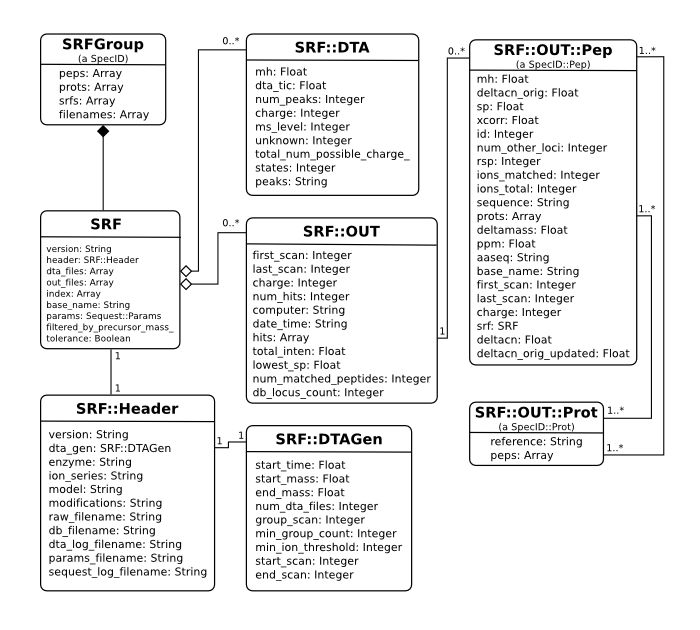

SRFGroup mixes in SpecID and itself contains a collection of SRF objects.

Filled diamond represents composition. Lines represent associations.
If you use the SpecID module to read in your srf file, you will always get an SRFGroup object. The method takes a lot of different input, each outputing an SRFGroup object (which mixes in SpecID)
require "spec_id"
# output is the same for any of these instantiations: an SRFGroup object!
specid = SpecID.new(["file1.srf", "file2.srf"]) # array of srf files
specid = SpecID.new("file1.srf") # single srf file
specid = SpecID.new("file.srg") # an srf group file
(A .srg file is a text file with .srf path names. See srg files for more explanation)
You may directly create the SRFGroup object. It is in all ways identical to the object created with the SpecID interface (indeed, the SpecID interface calls this initializer):
srfg = SRFGroup.new(["file1.srf", "file2.srf"]) # only takes an array
One would expect sequest results to be within the precursor mass tolerance specified in the sequest.params file used for the search. However, .srf files contain all hits, even if they don't pass this filter. By default, mspire filters sequest hits based on the precursor mass tolerance specified in the sequest.params file and adjusts hit values accordingly (see deltacn section). This filtering is only performed at the level of a SRFGroup object.
# filters hits by default
srfg = SRFGroup.new(["file1.srf", "file2.srf"])
# no filtering:
srfg = SRFGroup.new(["file1.srf", "file2.srf"], false) # <- notice the false!
srf.peps # => Array of SRF::OUT::Pep objects
srf.prots # => Array of SRF::OUT::Prot objects
srfg.srfs.each do |srf|
srf.version # srf file version
srf.header # SRF::Header object
srf.base_name # short identifier of the run
srf.params # Sequest::Params object
srf.filtered_by_precursor_mass_tolerance # => have results been filtered?
end
srfg.srfs.each do |srf|
srf.dta_files.each do |dta|
dta.mh # observed M+H+
dta.dta_tic # total ion count
dta.num_peaks # the number of peaks
dta.charge # assumed charge
dta.ms_level # ms level
dta.peaks # a byte array of floats
# to extract out the peaks:
dta.peaks.unpack("e*") # => an array of floats
end
end
# the easy way:
srfg.peps # => SRF::OUT::Pep objects
srfg.prots # => SRF::OUT::Prot objects
# or the long way:
srfg.srfs.each do |srf|
srf.out_files.each do |out|
out.hits.each do |pep|
pep.mh # theoretical M+H+
pep.xcorr # Xcorr
pep.sequence # A.PEPTIDE.C
pep.aaseq # PEPTIDE
pep.deltacn_orig # the (classic) deltacn value given in the srf file
pep.deltacn_orig_updated # the latest updated (classic) deltacn value
pep.deltacn # latest updated new definition deltacn
pep.prots.each do |prot|
prot.reference
end
end
end
end
The classic Deltacn ('delta correlation normalized') is the normalized difference between the hit's Xcorr and the best hit's Xcorr. Thus, the top hit receives a 0.0. If the top hit has an Xcorr of 2.0 and the hit of interest has an Xcorr of 1.0, the normalized difference between the two will be (2.0 - 1.0) / 2.0 = 0.5 .
The classic deltacn found in the raw srf file is accessed (assuming a
SRF::OUT::Pep object named pep):
pep.deltacn_orig
If the deltacn has been recalculated (after precursor tolerance filtering) the new value will be stored in
pep.deltacn_orig_updated
If no filtering has been performed, pep.deltacn_orig and
pep.deltacn_orig_updated will be equal.
A long time ago, the ISB folks (creator's of the Trans-Proteomic Pipeline) only considered top hits (at least with the out2summary software), and the classic deltacn doesn't say much about the best hit (since it's always zero). So they took the value of the 2nd best hit and called it the 'deltacn'.
In the Bioworks Browser software, deltacn is redefined as the deltacn of the next best hit. So the top hit gets the deltacn of the 2nd best hit (same as the ISB folks), the 2nd best hit gets the deltacn of the 3rd best hit and so on. The last hit gets a deltacn of 1.1.
The New deltacn (always updated when filtering by precursor tolerance) is accessed
pep.deltacn
Many of these objects are Arrayclass objects and so they are really arrays. This knowledge can be handy for accessing lots of information at once (can be much faster, too):
# grab all values in one shot (order is important!):
(mh, deltacn_orig, sp, xcorr, id, num_other_loci, rsp, ions_matched,
ions_total, sequence, prots, deltamass, ppm, aaseq, base_name, first_scan,
last_scan, charge, srf, deltacn, deltacn_orig_updated) = pep
(deltacn_orig, deltacn_orig_updated, deltacn) = pep.values_at(1, -1, -2)